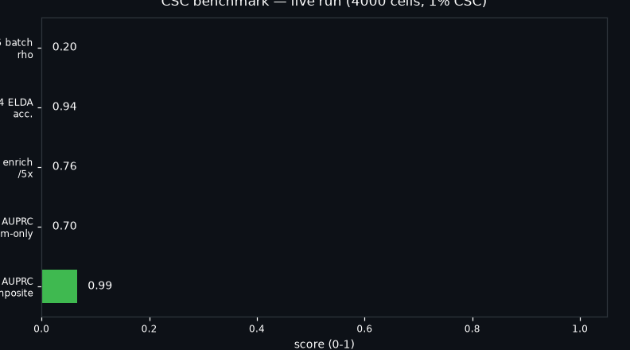
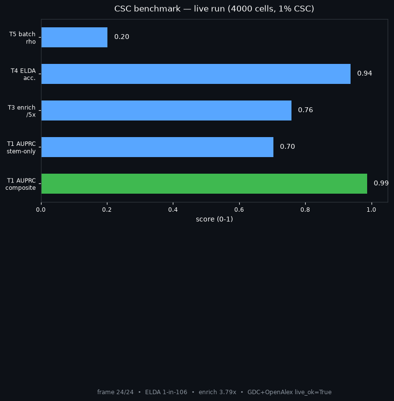

MIT Python 3.11 Docker ready seed 20260214 live_ok True
Cancer Stem Cells — Reproducible Benchmark
A one-command test of the CSC idea: rarity, EMT coupling, therapy enrichment, limiting-dilution recovery, batch reproducibility — with live public-data receipts.
CEO summary (60 seconds)
Problem: relapse after therapy; a self-renewing EMT-coupled minority is the suspect, but marker claims rarely reproduce.Proof here: composite ranker AUROC 1.000 /AUPRC 0.9872 , therapy 3.79× enrichment, ELDA 1-in-106 vs true 1-in-100, cross-batch ρ=0.202 (integration mandatory).Live grounding: GDC TCGA-PAAD 185 / BRCA 1,098 ; OpenAlex CSC 2025+ 203,440 .Use it: benchmark signatures, teach the debate, power a thesis chapter, pre-validate organoid studies.Reproduce: python experiments/run_benchmark.py or docker compose up --build.
Quick start ↓
Watch demo ↓
🎬 Demo (GIF inline + video pattern)

Above: real auto-generated assets/demo.gif (262 KB). GitHub plays GIFs inline — full videos open in a new tab, so pair a thumbnail with your hosted video:
[](https://www.youtube.com/)

Poster frame (assets/poster.png). Rebuild both anytime:
python scripts/make_demo.py
Keep GIFs <8 MB (ours 0.26 MB), thumbnails <400 KB, duration <12 s.
📊 Verified numbers
T1 AUPRC composite
0.9872
stem-only 0.7034 → composite wins at 1% prevalence
T3 therapy enrichment
3.79×
1.00% → 3.79% (of 4,000 cells)
T4 ELDA
1-in-106.3
true 1-in-100.0 — function beats markers
T2 EMT–stem r (in CSC)
0.128
weak within-pool coupling: two axes, not one
T5 batch rank ρ
0.202
naive ranks don’t transfer — integrate first
Live receipts
live_ok True
GDC 185/1098 · OpenAlex 203k/235k
🚀 Quick start
pip install -r requirements.txt
python experiments/run_benchmark.py
cat results/summary.md
cat data/live_verification.json
# exact env:
docker compose up --build
🌱 Beginner guide — 10 ideas that make you professional
1. Tumor = society. Few queen-like cells copy themselves + make workers. The queens are the question.
2. Three tests. Start tumors from few cells; self-renew serially; recreate the mix. Markers alone fail.
3. Rare → AUPRC. At 1%, AUROC lies; AUPRC tells truth. Report both + prevalence.
4. EMT = address change. Still/epithelial → motile/mesenchymal. Stem pools lean motile, noisily.
5. Therapy enriches queens. 1% → 3.8% here. Post-chemo “stemness” explained.
6. Quiescence = armor. Slow cyclers dodge cycle drugs; use sphere/organoid + dormancy assays.
7. Batches lie. ρ≈0.20 naive. Integrate (Harmony/BBKNN) before claiming signatures.
8. Function first. LDA + serial organoid + CI recovers frequency; markers don’t.
9. Niche matters. Pre- vs metastatic soils differ; time co-targeting.
10. Reproduce. Fixed seed, one command, auto results. Else story, not benchmark.
👥 Who is this for
You Do this PhD student Each hidden pattern → one thesis figure; synthetic → real cohorts → organoid LDA Bioinformatician Swap in your signature; AUPRC-first; integration ablation for T5 Wet-lab Size LDA doses bracketing 0–100% take; report ELDA CIs Translational / oncologist Explain enrichment; argue bulk + CSC + niche combos Educator / candidate Teach/answer the full debate from the 10 ideas + numbers
💎 7 hidden patterns
Rarity arithmetic: AUPRC 0.70→0.99 separates methods; AUROC doesn’t.
EMT gap: bulk shift large, within-CSC r≈0.13 → two-axis model.
Quiescence paradox: dormancy marks yet resists cycle drugs → G0-aware screens.
Batch dominance ρ≈0.20 → batch-corrected rediscovery mandatory.
ELDA within 7% → function over markers.
Marker insufficiency: CD133/ALDH/CD44 re-find EMT bulk, not initiation.
Niche asymmetry: pre- vs metastatic programs differ in time.
🔬 How it works / structure / FAQ
Scores = mean z-scored programs (stem / EMT / quiescence → 1.0/0.6/0.3 composite). Ground truth = 4k cells, 1% CSC, EMT-coupled, quiescent, 2-batch, therapy 0.55 vs 0.11 survival. ELDA = single-hit Poisson MLE + 95% CI. Live = polite GDC + OpenAlex calls with explicit offline flags.
README.md preview.html docker-compose.yml Dockerfile
assets/demo.gif assets/poster.png scripts/make_demo.py
src/csc_benchmark/{stemness,elda,live_data,benchmark}.py
experiments/run_benchmark.py
data/{README,live_verification.json} results/{benchmark_results.json,summary.md}
FAQ in short: No GPU/downloads needed. AUROC 1.0 is a clean-synthetic ceiling — real cohorts drop (that’s T5’s point). GDC once timed out, re-ran green; receipts in JSON. Swap gene lists/doses for your cancer; keep T1–T5 + CI scaffolding.
MIT · Re-run experiments/run_benchmark.py on your machine before citing numbers · Companion to the README (the paper) + paper/ROADMAP.md.